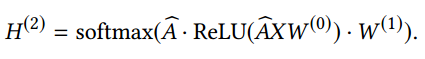
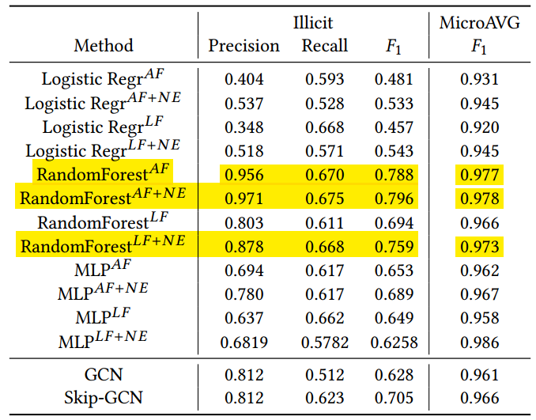

Anti-Money Laundering in Bitcoin: Experimenting with Graph Convolutional Networks for Financial Forensics¶
这篇文章讲的是对比了Logistic回归、随机森林、多层感知器和GCN等方法的结果，发现了随机森林方法效果更好。
这篇文章中使用的GCN分别是Skip-GCN，和捕捉了时间信息的EvolveGCN。
普通的GCN公式是：

SkipGCN则将输入节点的特征与中间嵌入直接连接形成了体系结构：
我们之前的做法与SkipGCN的这种做法有相似的地方，可以专门提取出来。
这篇文章的实验发现了随机森林效果更好。
